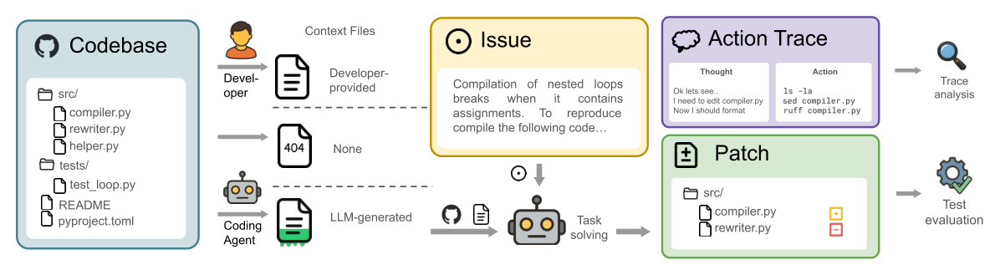
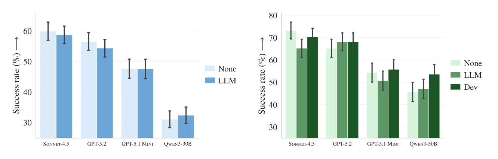
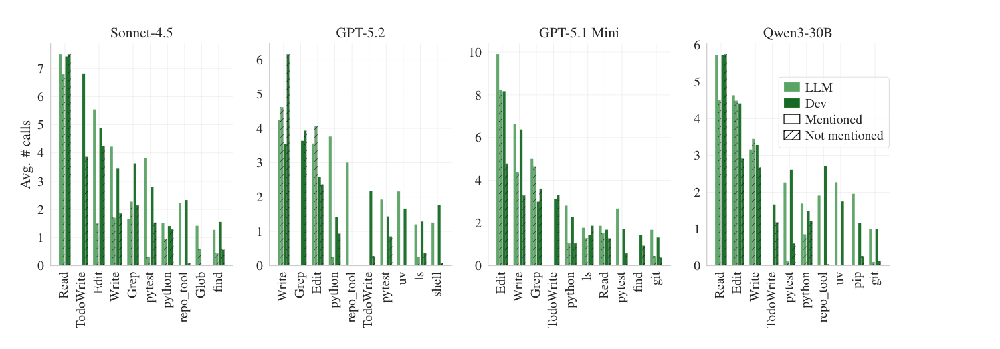
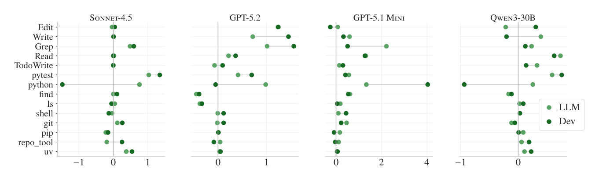
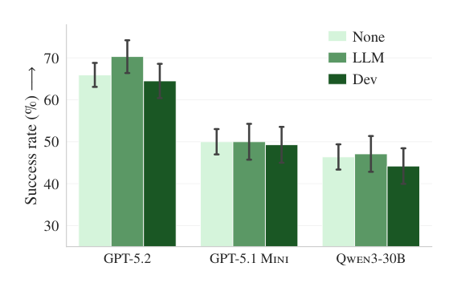

「上下文的纪律」系列 · 第 1 篇 / 共 8 篇
我们在给编码智能体喂什么，它们消化得怎么样
▍草稿 · 开场（人工补写后删除本虚线框，正文格式即用下方样式）
周一早上十点，你刚把团队的新项目仓库 clone 下来，准备接入编码智能体。按官方文档的指引，第一步不是写代码，而是跑一句 /init——于是仓库根目录多了一个 CLAUDE.md（或者 AGENTS.md）。你往里面填：目录结构说明、构建命令、测试怎么跑、"提交前务必跑 lint"……半小时后，一份像模像样的"仓库说明书"诞生了。组长点点头："好，以后 AI 就懂咱们项目了。"
这一幕正在全世界上演。AGENTS.md 官网报告：已有超过 60,000 个开源仓库放进了这样的文件；几乎所有主流 agent 框架都支持它，各家厂商的文档也在推荐你写。
但"大家都在写"和"写了真有用"之间，隔着一堵证据的墙——从来没有人为这件事做过严格实验。直到 ETH 苏黎世的一组研究者把它当成一次临床试验来做：三种设置对照、四个编码智能体、438 个真实任务。结论有点扎心：成功率纹丝不动，账单稳定上涨 20%。
【人工补充位 · 建议 2-4 句】写一段你自己的经历：比如你在哪个仓库维护过（或被 /init 生成过）CLAUDE.md / AGENTS.md / 方法文档，当初为什么写、花了多少时间维护、有没有观察到效果——有没有一次是拿数据验证过的？这段亲身经历是开场从"别人的研究"过渡到"你的问题"的桥。
本期论文
Evaluating AGENTS.md: Are Repository-Level Context Files Helpful for Coding Agents?
Thibaud Gloaguen, Niels Mündler, Mark Müller, Veselin Raychev, Martin Vechev
ETH Zürich & LogicStar ｜ arXiv:2602.11988（2026-02 首发，v2 更新于 2026-06）
一句话结论：仓库级上下文文件不显著提升任务成功率（p=0.87 / 0.37），却把推理成本平均抬高 20% 以上（p<0.001）。
名词速查
▸ 上下文文件（context file）：AGENTS.md、CLAUDE.md 这类放在仓库根目录、专门写给 AI 编码助手看的说明文件，内容通常包括仓库概览、构建与测试命令、代码约定。
▸ SWE-bench：从真实 GitHub issue 构建的编码任务基准，任务是修复 issue 并通过测试；"Lite" 子集 300 题，是行业最常用的标尺之一。
▸ p 值：粗略地说，p 越小，越不像是巧合。惯例 p<0.05 算"显著"；p=0.87 意味着"与噪声无法区分"。
研究者要回答的问题只有一个：给编码智能体一份仓库说明书，它修 bug 的成功率和花销会变吗？实验设计成一个标准的"临床试验"：同一个仓库、同一个任务，只改变一个变量——上下文文件的有无与来源，共三种设置：
① DEV：仓库里开发者亲手写的文件保持原样（真实写作场景）
② None：把文件拿掉（对照组）
③ LLM：删掉原文件，按厂商推荐的方式用智能体自己生成（/init 一键生成那类）
任务来自两个互补的基准。一边是行业标尺 SWE-bench Lite（300 题，11 个热门 Python 仓库）——但热门仓库大多没有开发者手写的上下文文件，只能测"LLM 生成"这一格。为补上"真人手写"这格，作者自建了 CTXBENCH：从 GitHub 上筛出根目录带 AGENTS.md/CLAUDE.md、以 Python 为主语言、有测试套件、PR 数不少于 400 的小众仓库，从 5,694 个 PR 中经双重过滤，再由智能体自动搭建环境（通过率 87%）、LLM 重写任务描述防止泄漏解法、LLM 生成回归测试并人工排查过拟合，最终得到 12 个仓库、138 个实例。被测的是四个主流组合：Claude Code + Sonnet-4.5、Codex + GPT-5.2、Codex + GPT-5.1 Mini、Qwen Code + Qwen3-30B-Coder（本地部署）。

图 1｜评测流水线：同一仓库派生三种设置（①保留开发者文件 ②不放 ③智能体自动生成），交由编码智能体解题，再对补丁与行为轨迹做双重分析（原论文 Figure 1）
双基准的选择本身就有讲究：SWE-bench 的仓库太热门，可能早就被模型"背过"；CTXBENCH 专挑小众仓库，还按模型知识截止日期做了切分检验（训练截止前的任务占比最高 40%，结论不变）。一热一冷互为印证。
先看主指标——任务解决率。LLM 生成的上下文文件，在 8 个"智能体 × 基准"设置中有 5 个不升反降：SWE-bench 上平均 −0.5 个百分点（p=0.87），CTXBENCH 上平均 −2 个百分点（p=0.37）——统计上与零无法区分，翻译过来就是：加了等于没加，还可能略有反作用。

图 2｜四组智能体的解决率：左为 SWE-bench Lite（None vs LLM），右为 CTXBENCH（None / LLM / DEV）。柱子高度的差别始终在误差范围内（原论文 Figure 3）
逐个智能体看（下表，单位 %，± 后为标准误），涨跌互现、幅度全在噪声量级：
| 基准 / 设置 | Sonnet-4.5 | GPT-5.2 | GPT-5.1 Mini | Qwen3-30B |
|---|---|---|---|---|
| SWE-bench · None | 59.9 ± 3.0 | 56.6 ± 2.9 | 47.7 ± 3.1 | 31.1 ± 2.7 |
| SWE-bench · LLM | 58.7 ± 2.9 | 54.4 ± 2.9 | 47.6 ± 3.2 | 32.4 ± 2.7 |
| CTXBENCH · None | 73.2 ± 3.8 | 65.2 ± 4.1 | 54.3 ± 4.3 | 45.7 ± 4.3 |
| CTXBENCH · LLM | 65.2 ± 4.1 | 68.1 ± 4.0 | 50.7 ± 4.3 | 47.1 ± 4.3 |
| CTXBENCH · DEV | 70.3 ± 3.9 | 68.1 ± 4.0 | 55.8 ± 4.2 | 53.6 ± 4.3 |
表 1｜各设置解决率（%）。SWE-bench 仓库无开发者文件，故无 DEV 行。数据取自原论文 Table 5，显著性检验见 Table 3
表里藏着一个真正显著的差别：开发者手写的文件显著优于 LLM 生成的文件（p=0.038，平均领先约 7 个百分点），对除 Claude Code 之外的智能体都有提升——但手写相对"完全不放文件"也只平均 +2.4 个百分点（p=0.21，不显著）。这组数字很有嚼头："写"本身没有魔力，写对内容才有价值；而让 AI 替你写，连这点价值也写没了。顺带一提，CTXBENCH 上提升最明显的是最小的模型 Qwen3-30B（45.7 → 53.6），越弱的模型越吃手写说明——这个梯度后面还会用到。
成功率不动，成本却动得很坚决：每一个设置、每一个智能体，成本都在涨。SWE-bench 平均 +20%、CTXBENCH 平均 +23%（置换检验 p<0.001），步数平均多出 2.45 / 3.92 步。
| 智能体组合 | SWE-bench：None → LLM | CTXBENCH：None → LLM | CTXBENCH：None → DEV |
|---|---|---|---|
| Claude Code · Sonnet-4.5 | $1.30 → $1.51（+16%） | $1.15 → $1.33（+16%） | $1.15 → $1.30（+13%） |
| Codex · GPT-5.2 | $0.32 → $0.43（+34%） | $0.38 → $0.57（+50%） | $0.38 → $0.54（+42%） |
| Codex · GPT-5.1 Mini | $0.18 → $0.22（+22%） | $0.18 → $0.20（+11%） | $0.18 → $0.19（+6%） |
| Qwen Code · Qwen3-30B | $0.12 → $0.13（+8%） | $0.13 → $0.15（+15%） | $0.13 → $0.15（+15%） |
表 2｜每实例平均执行成本（美元）。基础数据取自原论文 Table 2，括号内百分比由基础数据换算
注意一个不太直觉的细节：成本上涨不只是"文件本身占 token"那点钱——文件最多几百 token，涨的却是两三成的总开销。多出来的钱花在了后面：智能体遵循说明书里的指示，跑了更多测试、grep 和读写了更多文件、翻来覆去重读已经注入的上下文文件。说明书被"念"了，而且是被认真地念了。
面对"不涨点"，第一个自然的怀疑是：智能体根本没理会说明书。作者用行为轨迹分析否证了这一点。把工具按"说明书是否提及"分组，差距是一到两个数量级：被提及的 uv 工具平均被调用 1.6 次/实例，未被提及的工具不足 0.01 次；仓库自有工具 repo_tool 是 2.5 次对不足 0.05 次。指令不仅被读了，还被执行了。

图 3｜工具平均调用次数：实心 = 说明书提及，斜纹 = 未提及。提及与否，差出一到两个数量级（原论文 Figure 9）
说明书还让智能体整体"更忙"：带上下文文件时，pytest、python、grep、read/write 等工具的调用量普遍上升（图 4）。对具备自适应推理的模型还能看到一笔隐性开销——GPT-5.2 的推理 token（reasoning tokens）平均多花了 22%（SWE-bench，GPT-5.1 Mini 为 +10%）。用论文的话说：遵循额外指令，本身就更"费脑子"。

图 4｜引入上下文文件（LLM 生成 / 开发者手写）后各工具平均调用量的变化，普遍右移即增加（原论文 Figure 5）
那无效的是哪部分内容？作者逐一检查了文件的组成。最受厂商青睐的"仓库概览（repository overview）"——Sonnet-4.5 生成的文件 100% 都包含——并不能减少智能体找到关键文件所需的步数；而删除概览、工具说明、测试说明等类别的消融实验，也没有任何一类删掉后成功率显著变化。测试与工具类的指令倒是显著推高了成本（删掉 Testing 类，GPT-5.2 的成本从 $0.47 降到 $0.37）。被认真执行的指令，没有换来任何收益。
实验做到这里，作者提出了一个漂亮的假说：LLM 生成的上下文文件，本质上是仓库既有文档的冗余复读。验证方法简单粗暴——把仓库里所有文档（*.md、docs/、示例）全部删掉，让上下文文件成为唯一的信息来源，再跑一遍。

图 5｜删光仓库文档后，LLM 生成的文件（绿）平均 +2.7%，并反超开发者手写版本（原论文 Figure 12，CTXBENCH）
结果：LLM 生成的文件平均提升 2.7%，而且反超了开发者手写的版本。这个反转同时解释了两件事：其一，为什么它在正常仓库里没用——它讲的东西，模型翻翻 README 和文档本来就能知道；其二，为什么坊间一直有"加了文件确实变好"的传言——很多小众仓库本来就没有文档，此时说明书是雪中送炭。作者的措辞很克制，但意思很清楚：在文档健全的仓库里，让 AI 生成的 AGENTS.md 大概率是在为冗余信息付费。
① 暂缓把"LLM 一键生成上下文文件"当默认动作——这与当前多数厂商的推荐正好相反；
② 手写文件只写 README 之外的非标准约定：非显眼的构建陷阱、非常规的项目结构、必须遵守的非功能要求；
③ 任何上下文文件的改动，上线前用本工作这样的对照实验验证——拿数据说话，而不是拿感觉。
边界也要说清楚：实验只覆盖 Python 仓库；只测了任务解决率与成本，没有测安全性、代码质量这类维度；CTXBENCH 只有 12 个仓库，DEV 文件是"存量真品"而非受控变量。这些都不推翻主结论，但提醒我们别把 +20% 这个数外推成普适定律。
▍草稿 · 结尾评论（人工补写后删除本虚线框）
我愿意把这篇论文的结论读成一句话：上下文不是免费资源，而是一种有价的配给。每一个 token 都在同时花三笔钱——账单上的钱、往返的延迟、以及模型有限的注意力。往说明书里每添一行，都应该自问一句：这行信息的收益，验证过吗？
"手写优于 AI 生成 7 个点、却只比不写高 2.4 个不显著的点"——这组数字值得每个团队贴在墙上。它说明信息没有魔力，稀缺的是 README 里查不到的非标准约定；把文档里已有的东西换个格式再写一遍，只是付两遍钱。
【人工补充位 · 建议 3-5 句】结合你自己的工作写评论，方向可选：①你维护过的 agent 工作流文件/方法文档里，哪类条目真的被用上了、哪类纯是浪费；②你们团队有没有做过（或敢不敢做）上下文的 A/B 对照；③"6 万个仓库都在写"这种行业惯性，你还见过哪些没被验证就被普遍采纳的实践。
不过，这篇论文在我脑子里留下的是一个更大的悬念：指令明明被执行了，测试多跑了，推理 token 多花了 22%——成功率却分毫不动。这些多花掉的注意力，到底去哪了？如果问题不出在"写什么"，而出在模型"怎么读"——那些被塞进窗口的东西，到底被如何对待——那么答案的线索，其实比 AGENTS.md 本身早了两年多。那时候还没有人讨论上下文文件，但已经有人给"长上下文"这件事，画过一条著名的曲线。
论文：Evaluating AGENTS.md: Are Repository-Level Context Files Helpful for Coding Agents?（arXiv:2602.11988，v2）
文中图表均引自原论文（图 1/3/5/9/12、表 2/3/5），转引仅作学习交流；数字已逐项与 v2 原文核对，百分比增幅由原文数据换算。
「上下文的纪律」系列下一篇，见更新。